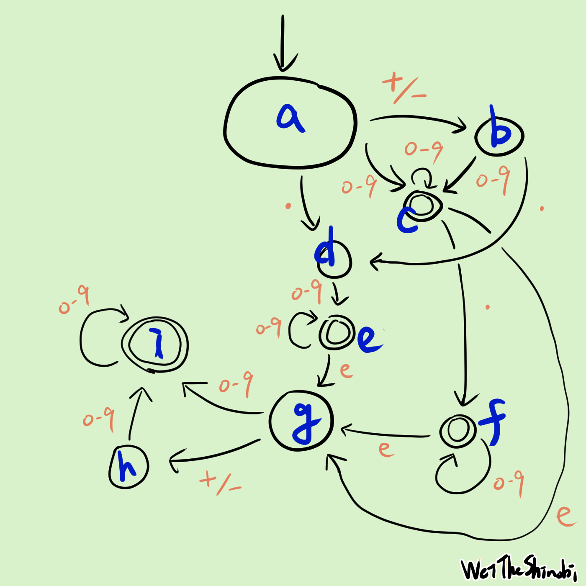

手把手帶你使用狀態機！以 LeetCode 65. Valid Number 示範
手把手帶你使用狀態機！以 LeetCode 65. Valid Number 示範
狀態機！啟動！LeetCode 第 65 題，合法的數字：今天選的這個題目還蠻有趣的，可以用一堆 if else 來判斷得到答案，但這個作法會有一堆 edge case 難以處理，而且也很醜、寫起來更是難受，但也可以使用狀態機：就是這次的主題，也許你會在編譯器或 AWS step function 中聽過。我希望帶大家用簡單的方式和類比，來了解這些有趣的事物，只需要懂一點程式就能看懂。探索未知總是令人興奮！
簡單講解題目
輸入一個字串，判斷是否是一個 number，輸出布林值。
number 可以是一個 decimal 或一個 integer，後面可以選擇要不要加 e。
decimal 可以是選擇加上 +/-，且會是以下三擇一：
- 一個或以上的 digits +
. - 一個或以上的 digits +
.+ 一個以上的 digits .+ 一個或以上的 digits
integer 可以選擇加上 +/-：
- 一個或以上的 digits
正規表示式
如果英文字母 A 到 Z 是一個英文字母的集合，那單字就是英文字母的排列組合，像是 apple 是英文字母組合成的，接續著說，一個句子就是單字集合照著某些規則組合而成的排列組合，可以想像我們從一本字典中選出一些單字，然後組合起來，像是I like duck，可能有一些主詞、受詞、動詞啊這些從小學到大的觀念，如果能夠照著規則，我們就能很輕鬆的表達出這題，我們只要照著規則把程式碼寫下來就好了。先用簡單的方式，試著用符號來表達題目的意思，這裡使用正規表達式。
可以把正規表示式當成一個方便又實用的工具，用來判斷輸入的字串是否有按照規則，所以我們可以用正規表示式來判斷輸入的字串是不是一個 number。
在方便的今天，如果想知道某些規則的正規表示式怎麼寫（像是合法的 email），只要問 LLM 就能輕鬆得到想要的答案。以下節錄至 ChatGPT 的回答：
你可以使用正则表达式来验证给定的字符串是否是有效的数字。根据你的条件，以下是一个可能的正则表达式：
^[+-]?(\d+\.\d*|\.\d+|\d+)([eE][+-]?\d+)?$这个正则表达式的含义如下：
^和$：表示字符串的开始和结束。
[+-]?：表示可选的正负号。(\d+\.\d*|\.\d+|\d+)：表示数字的整数部分和小数部分，它可以有以下三种形式之一：
\d+\.\d*：至少一个数字，一个小数点，然后零个或多个数字。.\d+：一个小数点，然后至少一个数字。\d+：至少一个数字。
([eE][+-]?\d+)?：表示指数部分，它是一个大写或小写字母 “e”，后面跟着可选的正负号和至少一个数字。略 …
感謝 2023！噢耶！
了解形式語言，非常的有趣！
所以我們的第一個作法，正規表示式如下：
// LeetCode 65. Valid Number
func isNumber(s string) bool {
return regexp.MustCompile("^[+-]?(\\d+\\.\\d*|\\.\\d+|\\d+)([eE][+-]?\\d+)?$").MatchString(s)
}
有限狀態機
狀態機是一種數學模型，用來描述物件在不同狀態之間轉換的行為，幫助我們簡化複雜與管理的問題：
可以看到狀態、事件、轉換、結束狀態（雙重圈圈的狀態），剛開始只要瞭解基本規則即可。
有興趣可以搜尋關鍵字：DFA, NFA。

換個角度想想，在不同的狀態下得到同樣的東西也許會有不同的結果，餓了拿到錢可以買食物，吃了食物會轉移你的狀態，從餓到飽，不同的時空背景下會做不同的事情，刀可以是兇器，也可以保護人，當我拿著刀就無法擁抱你，就看當下的情況，接下來我們會看到何謂狀態機、視覺化的流程。
畫圖
只要按照題目的意思做即可，首先 number 可以是 decimal 或 integer，所以我們可以看看 decimal 和 integer 的開頭：
- number 是 decimal 或 integer，可以選擇再加上 e + integer
- decimal 可以選擇 sign，接下來是 digit 或 dot
- integer 可以選擇 sign，接下來只能是 digit
開始拆解，照著這三點把結果畫出來，decimal 稍微複雜一點，他有三條路和選配一個正負號，integer 比較簡單，至於要怎麼畫圖呢？現在我們拿 integer 示範：
integer 可以選擇加上
+/-：
- 一個或以上的 digits
integer 一開始選擇可以接受 +/-，那如果不選+/-的話也可以接受0-9，所以可以畫出兩條路：
- 初始狀態接受
+/-的路 - 初始狀態接受
0-9的路
接下來因為+/-後可以接受0-9，所以替他加上一條路。而 digit 可以是一個或多個以上，所以這個狀態可以再畫出路，那會有多少個 digit 呢？難道有多少 digit 就要畫出多少的狀態嗎？不用，可以把這些狀態合併成指向他自己。
而 decimal 同理，把初始狀態可以接受的 token 列出來：
decimal 可以是選擇加上
+/-，且會是以下三擇一：
- 一個或以上的 digits +
.- 一個或以上的 digits +
.+ 一個以上的 digits.+ 一個或以上的 digits
可以知道初始狀態可以接受+/-，第 1, 2 點可以接受 digits，第 3 點可以接受 .，這代表初始狀態可以有三條路走，然後我們再按照這個規則延伸，如果可以接受 token，就有路。路是人走出來的
下圖中：integer 是左半邊， decimal 是右半邊。

終於弄好了，看起來超複雜的，左邊是 integer 的路線，右邊則是 decimal，照著題目規則畫上去，每個圈圈代表一個狀態，不同狀態中間有許多路來轉換。
選到什麼字符就往哪走，一直走到沒有字符為止。雙重圈圈代表這個狀態可以是結束的狀態，如果走到這個狀態時剛好字串也結束了的話，那代表機器接受了這個字串；反之走到單獨一個圈的狀態剛好結束，代表拒絕，還沒結束便無路可走也是拒絕的。
舉例來說：我們從 number 開始，當你遇到什麼符號，就選擇往哪邊走，如果字串是+5，一開始就可以往左或右邊走，因為第一個字符是+，下一個符號是5，如果當下的狀態可以接受（像是0-9），那我們就有路可走，選擇超多的。
這裡附上一個視覺化的範例，示範一個狀態機能否接受字串abc：
因為最後的狀態可以是終態，所以機器接受。
但現在有個問題，我們很難預測到底要選擇哪條路走，像是剛剛說的例子，假如一開始拿到+，到底要往左還是往右呢？當然也可以把每條都走過一次看看有沒有成功的案例，這也是一種做法，但是會走得很累、腿很酸。又或者我們也可以簡化一下這張圖呢？行吧，不如就把狀態合併吧，這樣就不用走這麼多路了嘿嘿！

先處理左半邊那塊，在初始狀態中有兩條是0-9，也有兩條是+/-，我們可以把他們合併，因為他們都接受同樣的 token。藍色的線是合併的樣子。與其說是合併，不如想像一下，我們把不同的狀態放到同一個集合中。

這條路上有兩個.，合併！

這兩個狀態可以視為等價。

最後把底下那個 integer 攤開來，這樣每個狀態的每條路都是確定的、沒有岔路，我們不用把每條岔路都走過一次來猜測，太好了！我們可以開始寫程式囉！
按圖施工，馬到成功
最後的做法就稍微簡單一點了，現在按照這個圖把程式碼寫出來即可，把每個狀態寫出來，把每個狀態的路徑寫出來，標記一下哪些狀態可以是結束，最後寫下演算法。
首先把每個狀態定義好，我已經用藍色把每個狀態標記起來：
const (
a = iota
b
c
d
e
f
g
h
i
digit = "0123456789"
sign = "+-"
eE = "eE"
dot = "."
)
寫下所有的狀態，還有 token set。
type Path struct {
tokenSet string
nextState int
}
nextPath := map[int][]Path{
a: {{sign, b}, {digit, c}, {dot, d}},
b: {{digit, c}, {dot, d}},
c: {{digit, c}, {dot, f}, {eE, g}},
d: {{digit, e}},
e: {{digit, e}, {eE, g}},
f: {{digit, f}, {eE, g}},
g: {{digit, i}, {sign, h}},
h: {{digit, i}},
i: {{digit, i}},
}
接下來把路徑寫下來，在這裡定義每個狀態的路接受哪些 token set，接受了會到哪條路上。
isFinalState := map[int]bool{
c: true,
e: true,
f: true,
i: true,
}
我們把圖中的雙重圈圈記錄下來，這表示此狀態可以是結束狀態，如果在雙重圈圈結束代表是正確的。
// 初始狀態
currState := a
for _, token := range s {
paths := nextPath[currState]
hasPathToGo := false
for _, path := range paths {
// 檢查當下的 token 可不可以走這條路，如果有，進入那個狀態
if strings.ContainsRune(path.tokenSet, token) {
currState = path.nextState
hasPathToGo = true
break
}
}
// 發現當下狀態無路可走，拒絕
if !hasPathToGo {
return false
}
}
// 結束 檢查有沒有停在雙重圈圈中
if !isFinalState[currState] {
return false
}
return true
最後是狀態機的演算法，走訪字串的每個符號，檢查當前狀態能否接受此符號，如果能接受就到下一個狀態，反之則拒絕，最終結束時，如果狀態可以是結束狀態，則表示這個字串被接受，反之。
最後附上完整的程式碼，希望大家都能自己從零到 accept，慢慢思索，成就感滿滿！
WeiTheShinobi
func isNumber(s string) bool {
const (
a = iota
b
c
d
e
f
g
h
i
digit = "0123456789"
sign = "+-"
eE = "eE"
dot = "."
)
type Path struct {
tokenSet string
nextState int
}
nextPath := map[int][]Path{
a: {{sign, b}, {digit, c}, {dot, d}},
b: {{digit, c}, {dot, d}},
c: {{digit, c}, {dot, f}, {eE, g}},
d: {{digit, e}},
e: {{digit, e}, {eE, g}},
f: {{digit, f}, {eE, g}},
g: {{digit, i}, {sign, h}},
h: {{digit, i}},
i: {{digit, i}},
}
isFinalState := map[int]bool{
c: true,
e: true,
f: true,
i: true,
}
currState := a
for _, token := range s {
paths := nextPath[currState]
hasPathToGo := false
for _, path := range paths {
if strings.ContainsRune(path.tokenSet, token) {
currState = path.nextState
hasPathToGo = true
break
}
}
if !hasPathToGo {
return false
}
}
if !isFinalState[currState] {
return false
}
return true
}